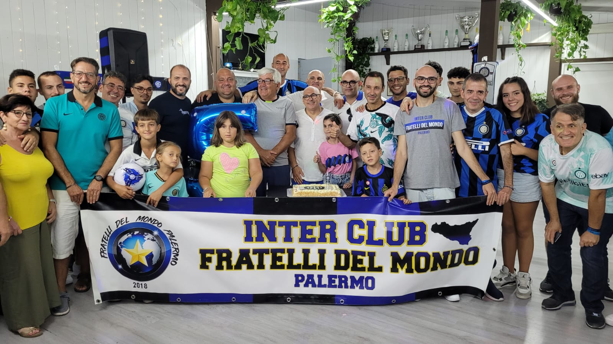
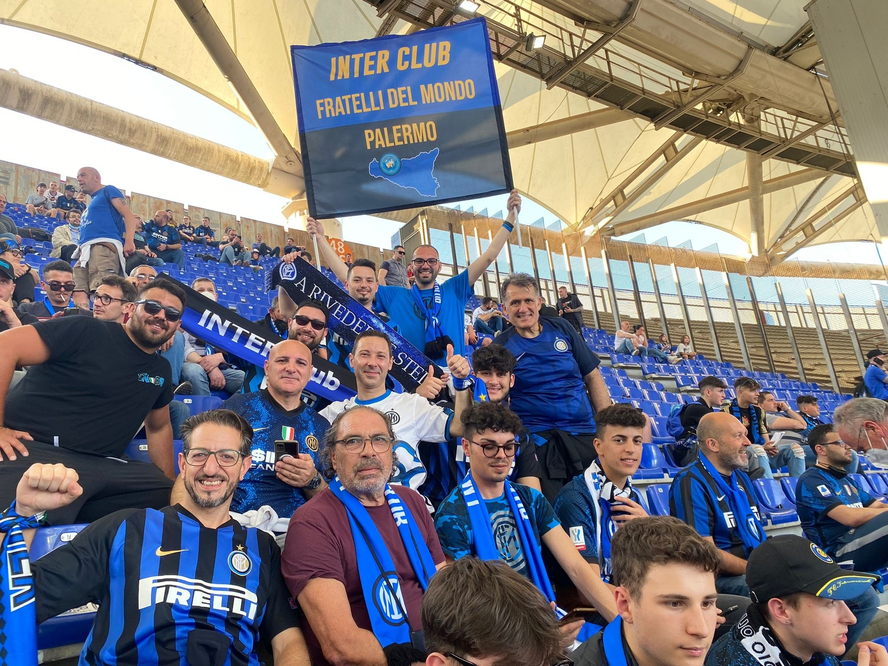
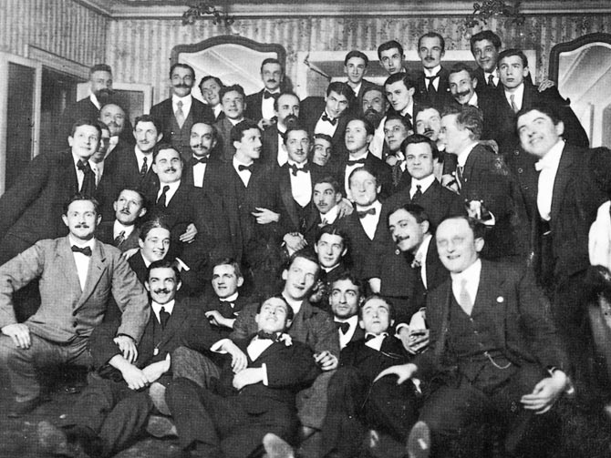

SCOPRI CHI E' L'INTER CLUB FRATELLI DEL MONDO
AMORE, PASSIONE E DEDIZIONE CI DIFFERENZIANO DALL'ESSERE UNA SEMPLICE ASSOCIAZIONE!
LA NASCITA
Il 20 giugno 2018 per noi dell'Inter Club Fratelli del Mondo Palermo è e rimarrà una data memorabile, perchè si è avverato un sogno lungo una vita, cioè quello di fondare un Inter Club. Questo club è nato da una passione e da un amore incondizionato verso i colori neroazzurri fin dalla nostra nascita, che in tutti questi anni sia nel bene che nel male hanno regalato tante gioe e tanti momenti magici. E noi siamo lieti di condividere tutto questo con voi soci che siete entrati a far parte di questa grande famiglia. Si, perchè la nostra e' una grande famiglia, accomunata da una grande passione Neroazzurra. Passione che non finirà mai, perche' il vero tifoso interista non abbandonerà mai e dico mai la propria squadra, neanche nei momenti più critici, ma la supporterà, la esalterà e la inciterà ad andare avanti, nonostante tutto e tutti.
Concludendo, tutto lo staff dell'Inter club Fratelli del Mondo Palermo vi augura di vivere insieme a noi dei momenti fantastici con la nostra amata INTER, perche' noi siamo FRATELLI DEL MONDO. FORZA INTER!

LA NOSTRA REALTA'

L'Inter Club fratelli del mondo è una associazione no-profit affiliata ufficialmente con F.C. INTERNAZIONALE MILANO.
Il nostro Inter club opera e gestisce a Palermo senza sede fisica,
le iscrizioni sono interamente online e di conseguenza sfruttiamo i social per mantenerci in contatto con il fine di radunarci tutti insieme per le varie attività.
Reputiamo e crediamo vivamente che una realtà del genere possa veramente unire la passionne neroazzurra che ogni interista ha dentro di se.
Il nostro obiettivo è quello di trasmettere il vero senso di appartenenza a questi colori neroazzurri che dal 1908 sventolano in alto al cielo senza tregua nella gioia e nel dolore.
PERCHE' ABBIAMO SCELTO IL NOME FRATELLI DEL MONDO?
IL NOME FRATELLI DEL MONDO DERIVA DALLA FONDAZIONE DELL'INTER
Il Football Club Internazionale Milano nacque il 9 marzo 1908 presso il ristorante "Orologio" in Piazza del Duomo a Milano, per iniziativa di un gruppo di soci dissidenti del Milan Football and Cricket Club, contrari al divieto imposto dal club rossonero di arruolare calciatori di nazionalità straniera. Giorgio Muggiani, artista futurista tra i 44 fondatori del nuovo club, scelse i colori che ne avrebbero caratterizzato il logo societario e aprì lo statuto della nuova squadra, scrivendo: «Questa notte splendida darà i colori al nostro stemma: il nero e l’azzurro sullo sfondo d’oro delle stelle. Si chiamerà Internazionale, perché noi siamo fratelli del mondo».
